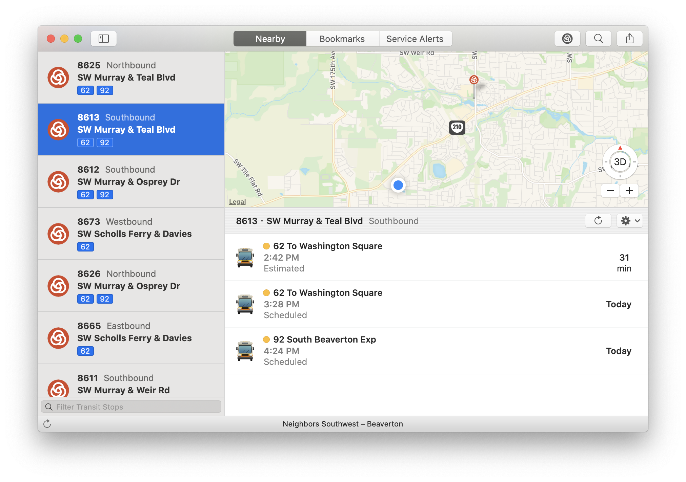
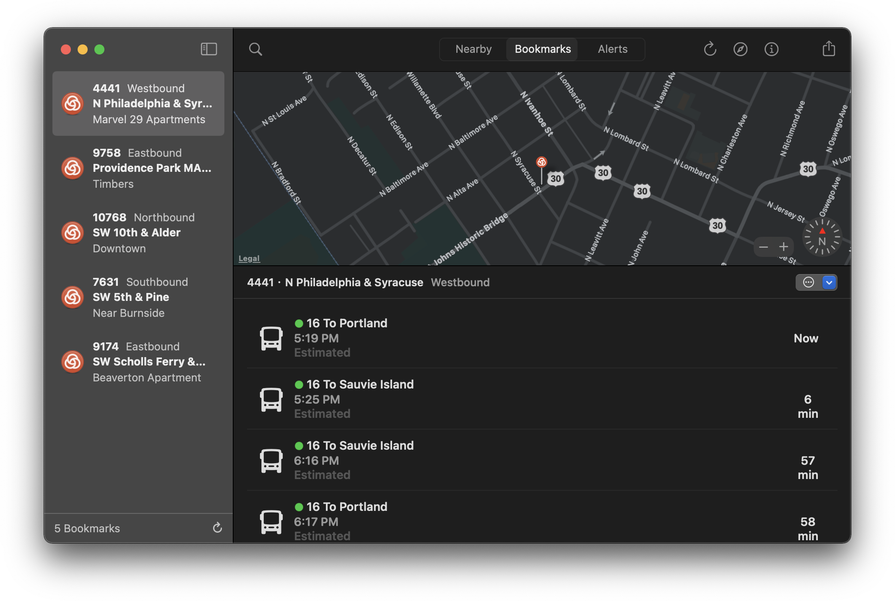
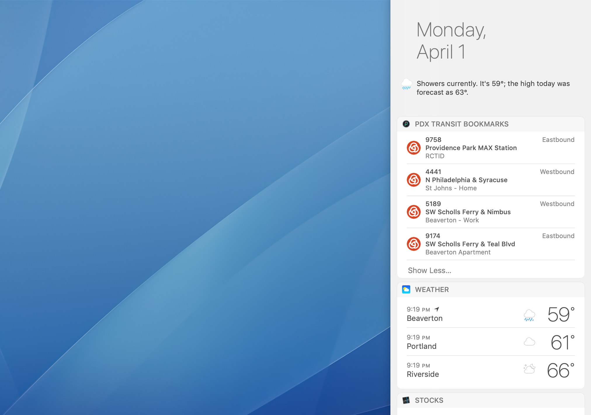
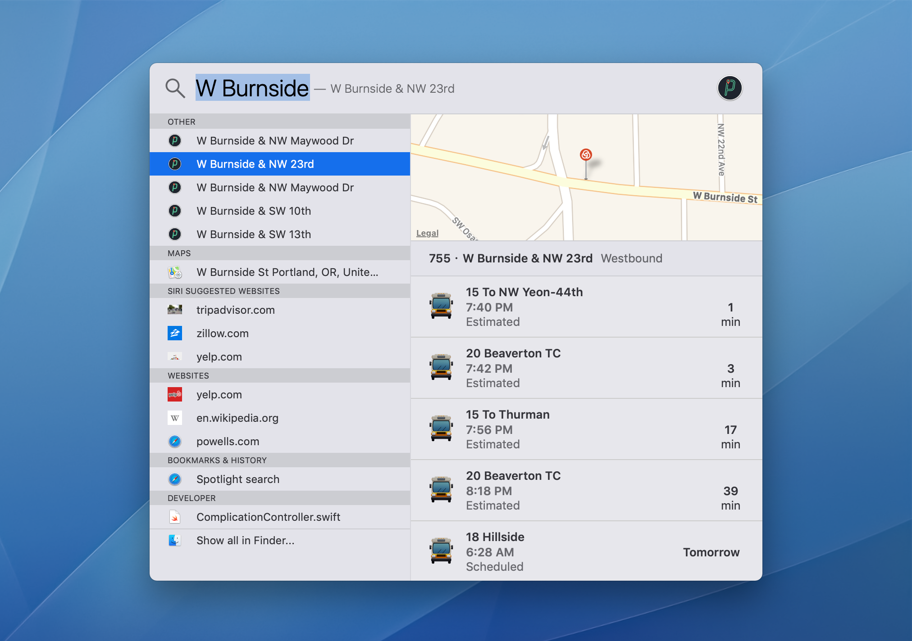
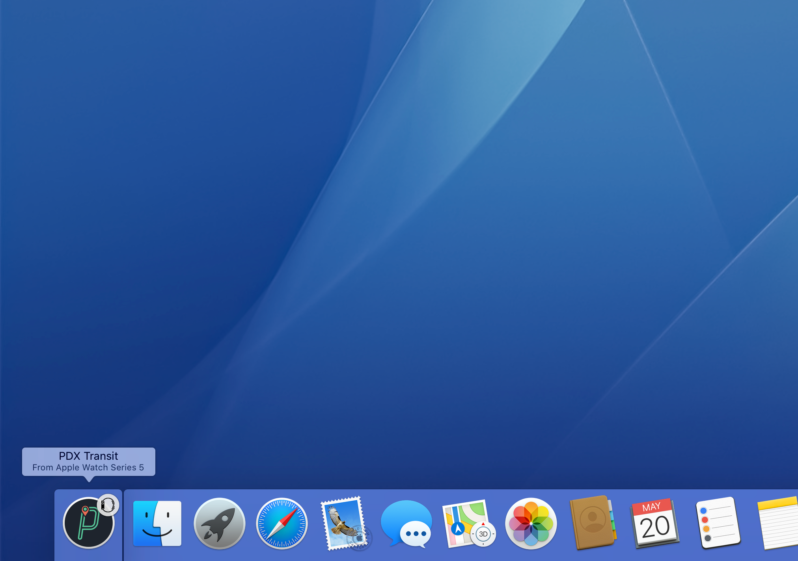
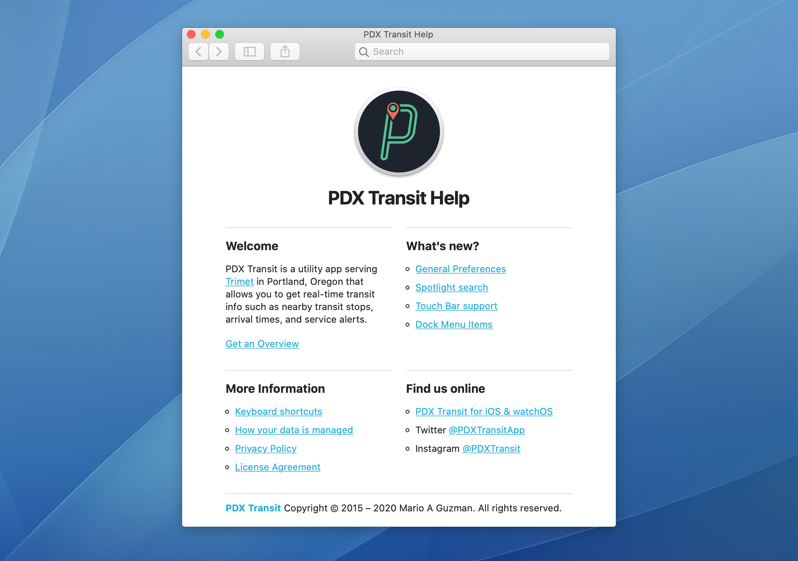

PDX Transit for Macintosh
PDX Transit for macOS is a counterpart for PDX Transit on iOS and watchOS. It conviniently provides you with nearby transit stops, arrival times, and service alerts using TriMet's open data web API.


Nearby Transit Stops & Arrival Times
TriMet API
PDX Transit uses your current location to find nearby TriMet transit stops. Select a transit stop to get arrival times and other details.

Service Alerts
TriMet API
View all service alerts published by TriMet grouped and sorted by transit line. There are options available to have them refresh every minute.

iCloud Bookmarks
CloudKit
Bookmark transit stops you frequent most. Bookmarks sync and stay up-to-date automatically across all your macOS, iOS, and watchOS devices.

Dark Mode
AppKit
Dark Mode makes it easier to stay focused on your work, because your content stands out while darkened controls and windows recede into the background.

Today View Widget
Notification Center
PDX Transit contains a Today View Extension Widget to get instant access to your PDX Transit Bookmarks. Click on a bookmark to open it within PDX Transit.

Spotlight
Core Spotlight
Your transit stop history in Core Spotlight so they can be searched by name or Stop ID. It will even display a preview with up-to-the-minute arrival times.

Handoff
Foundation
With Handoff, you can start on one device, then switch to another nearby device and pick up where you left off.

Help Book
Apple Help
PDX Transit for macOS includes a proper classic Mac OS X Help Book that can be accessed from the Help menu and is available offline.
Ready to give it a try?
Check it out first hand and see what makes PDX Transit an incredibly useful tool for those who use public transit in Portland, Oregon.

© 2019-2020 Mario A Guzman
Personal
Downloads